Mycellium-Aegis
Ormanın biyolojik ağını canlı bir sensöre dönüştürüyoruz.
Saha çalışmalarımızda hep aynı sorunu gördük: Sistemler alevi görmeden harekete geçemiyor. Toprak altındaki mantar ağı ısıya anında tepki verir. Bu sinyali duman çıkmadan yakalıyoruz.
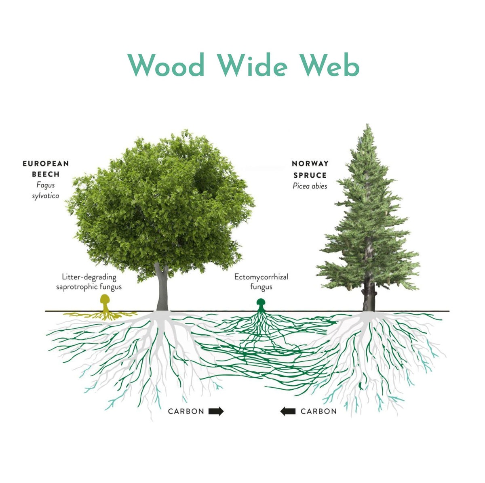
Bugünün sistemleri görüş hattına mahkûm.
Görüntü İşleme Yetersizliği
Yoğun örtü, vadi tabanı ve bulut altında kameralar işlevsiz kalır.
45–90 Dakika Kayıp
Gaz sensörleri rüzgârın dumanı taşımasını bekler, müdahale oldukça gecikir[1].
Ormana Bırakılan Çöp
Pil ve plastik tabanlı elektronikler hızla korozyona uğrayıp atıklaşır.

Trilyonlarca metrelik sensör ağı: Wood Wide Web
Biz yeni bir altyapı kurmuyoruz. Ağaçları birbirine bağlayan miselyum ağının, ısı şokunda ürettiği aksiyon potansiyellerini dinliyoruz.
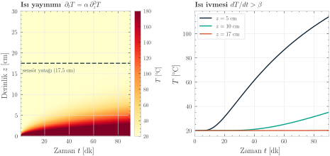
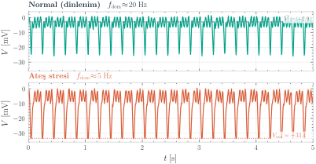
Doğayla bütünleşen korozyonsuz kök-elektrot
Biyomimetik Üç Katmanlı Tasarım
Orman zemininde plastik kılıflı metal kablolar aylar içinde oksitlenir. Çözümümüz; çelik çekirdek, iletken grafit matris ve sodyum aljinat hidrojelden oluşan paslanmaz ve mantar ağını kendine çeken biyo-uyumlu elektrottur.
- Sodyum Aljinat Hidrojel: Canlı dokuyu simüle eder.
- İletken Grafit Matris: Korozyonu önler, empedansı düşürür.
- 316L Çelik Çekirdek: Fiziksel dayanım ve yeraltı penetrasyonu.
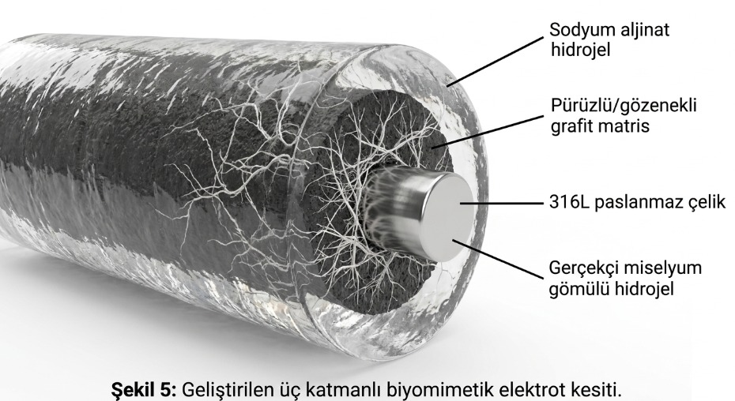
Toprak altından buluta: mesh gateway mimari
Biyoelektrik sinyaller yüksek hassasiyetli ADC ile dijitalleştirilir ve mikrodenetleyici üzerinde ön işleme tabi tutulur. Veriler, orman örtüsünü aşabilen Sub-GHz LoRaWAN ağı ile merkez kuleye, oradan hücresel bağlantıyla buluta iletilir.
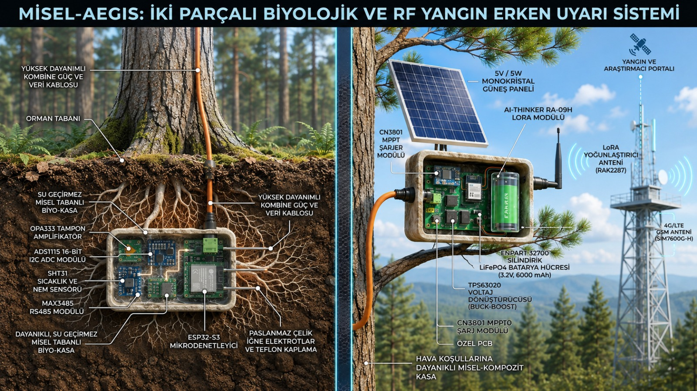
Saf gürültüden öznitelik çıkarımı
Doğal ortamdaki toprak empedansı ve nem dalgalanmaları sinyali kirletir. Ham DC gerilim üzerinden 5-tap FIR filtresi geçirilerek çevresel parazitler sönümlenir.
- DC offset kalibrasyonu (x̄₅₀)
- FFT ile frekans domeni
- Dominant frekans tespiti
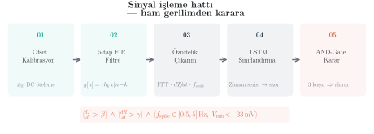
Sensör füzyonu ile < %1 yanlış alarm
Çok Boyutlu Karar: AND-Gate & LSTM
Yanlış alarm, orman sistemlerinde operasyonel maliyeti yıkıcı derecede artırır. Tek bir voltaj eşiği kullanmak yerine; LSTM tabanlı zaman serisi tahmini ve mantıksal AND-gate füzyonu ile kesinlik (precision) maksimize edilir.
Alarm Koşulu = (dT/dt > β) ∧ (dR/dt > γ) ∧ (fspike ∈ [0,5–5] Hz)
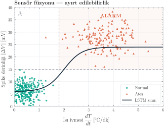
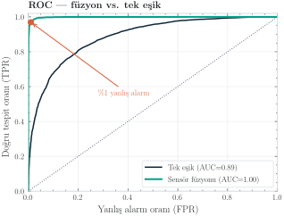
Hipotezi laboratuvar ortamında doğruladık.
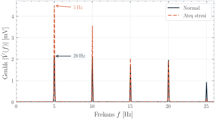
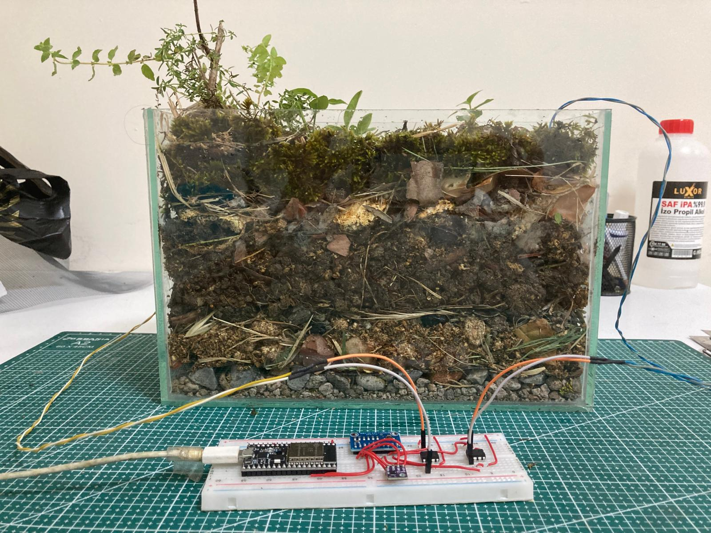
Şekil 11: İklim kabini termal şok testleri. Pleurotus ostreatus ağı üzerinde ESP32 ve yüksek çözünürlüklü ADC kullanılarak canlı veri elde edilmiştir.
Global ihtiyaç, odaklanmış pazara giriş.
(Büyüme Oranı: %8.5 CAGR)
Pazara Giriş Stratejisi
- Aşama 1: Enerji ve madencilik alanları (zorunlu ESG risk raporlamaları nedeniyle alıma en hazır segment).
- Aşama 2: Avrupa ormancılık kooperatifleri (iklim krizinden en çok etkilenen pilot bölgeler).
- Aşama 3: TRL 8 saha kanıtı sonrası ABD ve Avustralya kamu ihaleleri.
Onlar rüzgârı bekliyor, biz ısıyı okuyoruz.
| Kriter | Mycellium-Aegis | Dryad Networks (IoT) | Pano AI (Kamera) |
|---|---|---|---|
| Tespit Yaklaşımı | Proaktif, hücresel iletim | Reaktif, partikül/gaz | Reaktif, optik görüntü |
| Kör Nokta Tespit Yeteneği | ✓ Tamamen kapalı, sınır yok | ✗ Rüzgâr ve topografyaya bağımlı | ✗ Kesin görüş hattı (LoS) şart |
| Donanım Korozyon Direnci | ✓ Biyo-uyumlu aljinat, korozyonsuz | ✗ Lityum pil ve plastik gövde | ✗ Metal kule ve güneş paneli |
| Bildirim Gecikme Süresi | Isı şokunda (duman çıkmadan) | 30–60 dakika kayıp | Duman görünür hale geldiğinde |
Tablo 1: Ticarileşmiş alternatif orman yangını tespit sistemlerinin karşılaştırması. Görüldüğü üzere, yer altından bağımsız ve proaktif ölçüm yapabilen tek teknoloji biyolojik sinyal tabanlı tasarımdır.
Neden Mycellium-Aegis?
Rakipler alevi veya dumanı görmeye ihtiyaç duyar, bu nedenle müdahale için kritik süreler kaybedilir. Biz ise ormanın sinir ağlarını kullanarak duman daha oluşmadan reaksiyon verebiliyoruz.
Donanımla gir, SaaS ile büyü.
Aegis-Nexus Kurulumu (CAPEX: B2G)
1 Ağ Geçidi + 100 Sensör Düğümünden oluşan sistem kamuya tek seferlik satışla kurulur. Maliyetin hızlı geri dönüşünü (payback) sağlar ve sahada fiziksel tutunma (lock-in) yaratır.
Yıllık Risk SaaS Analitiği (ARR: B2B)
Özel sektör (enerji tesisleri, kağıt, maden) için donanım düşük kâr marjıyla sahaya verilir. Asıl ölçeklenebilir kârlılık, yapay zeka yangın analitik panosunun yıllık yenilenen bulut lisansından elde edilir.
Ticari bağımsızlık için 5 paket yeterli.
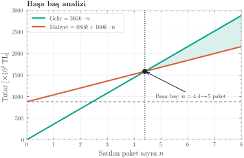
- Birim Paket Kâr Marjı: 200.000 TL
(360k satış fiyatı − 160k üretim/kurulum) - 18 Aylık Sabit Gider Planı: ≈ 880.000 TL
(AR-GE sarf malzeme, IP, bulut sunucu, kira) - Çekirdek Fon İhtiyacı: 1.350.000 TL
(TÜBİTAK 1812 BİGG desteği ile karşılanacaktır)
Sonuç: Piyasaya sürülen sadece ilk 5 referans paket satışı ile projemiz kârlılığa geçmekte ve dış yatırıma ihtiyaç duymadan kendini idame ettirebilmektedir.
Laboratuvardan satışa: 18 aylık plan.
Biyomimetik Donanım
Aljinat-grafit elektrot üretimi, iklim kabini optimizasyonu.
TRL 4YZ Füzyonu Eğitimi
LSTM modellerinin eğitilmesi, %99 gürültü izolasyon testi.
TRL 5Saha Mesh Doğrulaması
Orman zemininde 3 ay kesintisiz açık hava LoRaWAN verisi.
TRL 6IP & Regülasyon
Patent başvurusu ve OGM saha entegrasyon izinleri.
MVP & İlk Ticari Fatura
Pilot B2B müşteriye kurulum ve SaaS sisteminin yayına alınması.
TRL 8Bu işi neden biz yapabiliriz?
Çünkü biyomateryal tasarımı, IoT sensör mimarisi, yapay zeka bulut analitiği ve B2B ticari süreçlerini dışarıdan bağımsız olarak çekirdek ekibimizle uçtan uca yönetiyoruz.
Mehmet Çetin
Proje yönetimi, endüstriyel tasarım, B2G ihale stratejisi.
Muhammet Yağcıoğlu
Biyosinyal işleme, PyTorch, zaman serisi makine öğrenmesi (LSTM).
Ömer Ünal
Elektronik tasarımı, LoRaWAN mesh ağları, düşük güç tüketimli gömülü sistemler.
Mahmut Can Göçlü
Biyopolimer sentezi, aljinat-grafit kompozitleri, miselyum inokülasyonu.
Orman kendi yangınını haber versin.
Sırada sistemin çalışan sayısal ikizi var; teknik sorular için Yedek Slaytlar hazır. Dinlediğiniz için teşekkürler.